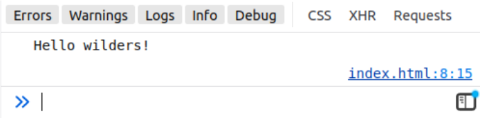

JS - First script
Objectifs
- Explorer les principes fondamentaux de JavaScript
- Manipuler des variables, des opérateurs, des conditions...
- Construire des premiers scripts interactifs
Pré-requis
- 1
Connaitre la structure de base d'un document HTML
cshtml<!DOCTYPE html> <html lang="fr"> <head> <meta charset="UTF-8"> <title>Mon super site</title> </head> <body> <p>Hello World</p> </body> </html>
Introduction
Avec HTML et CSS, JavaScript est le 3e langage exécuté dans les navigateurs web. C'est un langage de programmation complet, basé sur des notions qui se retrouvent dans la plupart des langages de programmation : variables, structures de contrôle...
Dans cette quête, tu vas faire un premier pas dans l'apprentissage du JS et des langages de programmation. Tu vas aborder des notions fondamentales que tu pourras retrouver dans l'apprentissage de chaque nouveau langage.
Sommaire
Mise en place
Si tu découvres complètement JavaScript, pas de panique !
Des guides complets (et en français) existent sur le web, notamment :
MDN, le site de Mozilla pour les devs
Un site/livre avec plus de 1000 pages à jour
Nous avons aussi créé nos propres ressources pour une découverte pas à pas. Tu peux commencer par regarder ces quêtes pour découvrir les concepts de base :
Pour expérimenter tout ça, tu vas développer une calculette basique dans ton navigateur.
Crée un nouveau dossier simple-calculator et crée un fichier index.html vide à l’intérieur.
Ouvre index.html avec VSCode et ajoute la structure de base d'un document HTML.
Dans la balise <body>, ajoute une balise <script> avec le code suivant :
console.log("Hello wilders!");
Ouvre le fichier index.html dans un navigateur, et affiche la console (F12) : que vois-tu ? Si tu vois ton message ci-dessus, cela signifie que tout fonctionne bien !
Pour être sûr, explique ce que tu as fait à tes collègues.
Ce que tu dois obtenir
Voilà la structure HTML de base ainsi que l’ajout de la balise <script> avec le code console.log("Hello les wilders!"); :
<!DOCTYPE html>
<html lang="fr">
<head>
<title>Calculatrice basique</title>
</head>
<body>
<script>
console.log("Hello wilders!");
</script>
</body>
</html>
Dans l'inspecteur :

Premières instructions
Maintenant que tu as un "bac à sable" pour faire des expériences, tu peux commencer le développement de ta calculatrice. Si la notion de "variable" ne te parle pas encore, tu peux regarder les quêtes suivantes avant de continuer :
La première étape de la création de notre calculatrice consiste à instancier des variables.
Crée 3 variables :
firstValue: pour l'instant, affecte le nombre1.operator: affecte le symbole"+".secondValue: affecte le nombre2.
Maintenant, fais autant de console.log que tu as de variables. Que vois-tu ?
Et si tu demandais à l’utilisateur de remplir ces variables ? Remplace les nombres 1 et 2 par des appels à la fonction prompt (voir la documentation). Attention, pas le "+" de operator, juste les valeurs 1 et 2 !
Qu’affichent les console.log ?
Voir la solution
<!DOCTYPE html>
<html lang="fr">
<head>
<title>Calculatrice basique</title>
</head>
<body>
<script>
console.log("Hello wilders!");
const firstValue = prompt("Premier nombre ?");
const operator = "+";
const secondValue = prompt("Deuxième nombre ?");
console.log(firstValue);
console.log(operator);
console.log(secondValue);
</script>
</body>
</html>
Comprendre la console
Ajoute un console.log de firstValue + secondValue : qu’affiche t-il ? Pourquoi ? Que dois-tu faire ?
Conseil : regarde cette documentation.
Et maintenant, qu’affiche le console.log ? Pourquoi ?
Pour être sûr, explique ce que tu as fait à tes collègues.
Ensuite, réponds aux questions pour voir si tu as bien retenu les concepts abordés jusqu'à maintenant :
true|||true|||true
# Quel est le rôle de la fonction console.log en JavaScript ?
[] Afficher des boîtes de dialogue dans le navigateur
[x] Afficher des messages dans la console du navigateur
[] Déclarer des variables
[] Exécuter du code JavaScript
# Que fait la fonction prompt ?
[] Affiche un message dans la console
[x] Affiche une boîte de dialogue pour obtenir une entrée de l'utilisateur
[] Déclare une variable
[] Arrête l'exécution du code
# Comment convertir une chaîne de caractères en nombre entier (sans chiffres après la virgule) en JavaScript ?
[] toInt()
[x] parseInt()
[] Number()
[] convert()
Agir sur l'opérateur
Un peu de ménage : supprime tous les console.log.
Ajoute un prompt à la place du "+" pour la variable operator. De cette manière, tu permets à l'utilisateur de choisir quelle opération faire. Mais maintenant, tu dois gérer les différentes options dans ton code.
Tu vas créer un "embranchement" : selon la situation, ton code va prendre un chemin ou un autre. C'est le principe des "conditions" :
Mets en place une condition sur la variable operator :
- Si elle contient la valeur
"+"alors, tu dois additionner les deux valeurs, stocker le résultat dans une variableresult, à afficher dans unconsole.log. - Sinon, dans tous les autres cas, soustrais les deux valeurs, stocke le résultat dans une variable
result, à afficher dans unconsole.log.
Explique ce que tu as fait à tes collègues.
Voir la solution
<!DOCTYPE html>
<html lang="fr">
<head>
<title>Calculatrice basique</title>
</head>
<body>
<script>
const firstValue = prompt("Premier nombre ?");
const operator = prompt("Quelle opération ?");
const secondValue = prompt("Deuxième nombre ?");
if (operator === "+") {
const result = parseInt(firstValue) + parseInt(secondValue);
console.log(result);
} else {
const result = parseInt(firstValue) - parseInt(secondValue);
console.log(result);
}
</script>
</body>
</html>
Dernières instructions
Tu as presque fini ! Maintenant que tu as fait une première condition, ajoute les conditions pour tous les opérateurs :
- Modifie ton code et ajoute des conditions pour les opérateurs
"-","*"et"/": pense à la constructionelse if. - Dans chaque cas, affiche le résultat de l’opération mathématique correspondante avec un
console.log. - Ajoute un cas par défaut avec un
elsefinal qui affiche"Opération inconnue".
Voir la solution
<!DOCTYPE html>
<html lang="fr">
<head>
<title>Calculatrice basique</title>
</head>
<body>
<script>
const firstValue = prompt("Premier nombre ?");
const operator = prompt("Quelle opération ?");
const secondValue = prompt("Deuxième nombre ?");
if (operator === "+") {
const result = parseInt(firstValue) + parseInt(secondValue);
console.log(result);
} else if (operator === "-") {
const result = parseInt(firstValue) - parseInt(secondValue);
console.log(result);
} else if (operator === "*") {
const result = parseInt(firstValue) * parseInt(secondValue);
console.log(result);
} else if (operator === "/") {
const result = parseInt(firstValue) / parseInt(secondValue);
console.log(result);
} else {
console.log("Opération inconnue");
}
</script>
</body>
</html>
Aller plus loin
Tu peux explorer d'autres notions fondamentales des langages de programmation dans ces quêtes :
More JS coming up
Tu aimes jouer ? Alors c’est le moment de créer un petit jeu : le "Juste prix" !
Reprend les étapes de la partie “Mise en place” en changeant le nom du dossier : crée un dossier price-is-right.
Puis :
-
Demande le nom du joueur ou de la joueuse.
-
Stocke un nombre aléatoire entre 1 et 100 (le prix à trouver) :
javascriptconst rightPrice = Math.ceil(Math.random() * 100); -
Demande un nombre au joueur ou à la joueuse (entre 1 et 100).
-
Si le nombre est supérieur au juste prix, affiche
"C’est moins". -
Si le nombre est inférieur au juste prix, affiche
"C’est plus". -
Si le nombre est égal au juste prix, affiche
"Bravo <nom> tu as gagné !"avec<nom>qui est remplacé par le nom "prompté" au début du jeu. -
Le jeu tourne en boucle jusqu'à la victoire.
Voir la solution
<!DOCTYPE html>
<html lang="fr">
<head>
<title>Juste prix</title>
</head>
<body>
<script>
const username = prompt("Votre nom ?");
const rightPrice = Math.ceil(Math.random() * 100);
let price = null;
while (parseInt(price) !== rightPrice) {
price = prompt("Combien ? (1-100)");
if (parseInt(price) < rightPrice) {
alert("C'est plus");
} else if (parseInt(price) > rightPrice) {
alert("C'est moins");
}
}
alert(`Bravo ${username} tu as gagné !`);
</script>
</body>
</html>
Challenge
Dans le même genre que le "Juste prix", j'ai voulu créé une machine à café. Le principe :
- La machine propose :
- "thé ou café ?"
- "sucre ?"
- "lait ?"
- Si oui, "végétal ?"
- La machine récapitule la commande et demande confirmation. Un exemple de commande :
"café, sans sucre, lait de vache". - Tant que la demande n'est pas confirmée, le programme recommence.
Malheureusement, j'ai renversé mon café sur le prototype et des parties du code ont été effacées :
<!DOCTYPE html>
<html lang="fr">
<head>
<meta charset="UTF-8">
<title>Prototype de Machine à Café</title>
</head>
<body>
<script>
**1** order = null;
**2** isConfirmed = false;
**3** (isConfirmed === false) {
while (order !== "thé" && order !== "café") {
order = prompt("thé ou café ?");
}
order += confirm("sucre ?") ? **4** : **5**;
**6** (confirm("lait ?")) {
**7** (confirm("végétal ?")) {
order += ", lait végétal";
} **8** {
order += ", lait de vache";
}
}
isConfirmed = confirm(`confirmer votre commande : ${order}`);
}
alert(`votre ${order} sera prêt dans une minute`);
</script>
</body>
</html>
Aide-moi à retrouver le code complet en remplaçant les parties effacées **1**, **2**, ..., **8** par du JavaScript.
Poste ton code comme solution de cette quête.
Critères de validation
- [ ] Le code est disponible.
- [ ] Quand tu copies le code dans un fichier HTML, et que tu l'ouvres dans le navigateur, tu peux passer ta commande.
La solution attendue :
<!DOCTYPE html>
<html lang="fr">
<head>
<meta charset="UTF-8">
<title>Prototype de Machine à Café</title>
</head>
<body>
<script>
let order = null;
let isConfirmed = false;
while (isConfirmed === false) {
while (order !== "thé" && order !== "café") {
order = prompt("thé ou café ?");
}
order += confirm("sucre ?") ? ", avec sucre" : ", sans sucre";
if (confirm("lait ?")) {
if (confirm("végétal ?")) {
order += ", lait végétal";
} else {
order += ", lait de vache";
}
}
isConfirmed = confirm(`confirmer votre commande : ${order}`);
}
alert(`votre ${order} sera prêt dans une minute`);
</script>
</body>
</html>